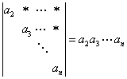
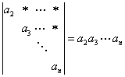

1.1 行列式的定义
前言
行列式这部分内容在线性代数里是一个基本内容，也是一个很重要的内容，这部分内容与后面的线性方程组、矩阵、向量组的线性相关、线性无关都有重要联系，他们都要通过行列式来讨论。那么什么叫行列式呢？
一、二阶行列式与三阶行列式
设有4个数，引入记号，称为二阶行列式，把数 称为行列式中
元素。
称为行列式中
元素。
因而，所谓一个二阶行列式，就是指由4个数排成两个行，两个列后的一个式子，其实质表示对这些数按一定法则进行运算，即二阶行列式等于它的左上角到右下角两个元素的乘积减去右上角到左下角两个元素的乘积，最后结果为一个数，称该数为二阶行列式的值。
例如

利用二阶行列式，我们有求解二元线性方程组的一个方法，即有下面定理。


定理1.1：设有二元线性方程组
 （1.1）
（1.1）
如果方程组的系数行列式，则方程组有唯一解，。
其中。


例1：求解方程组
解：方程组的系数行列式为
故方程组有唯一解
又
则方程组的唯一解为
由二阶行列式的定义，可以想到三阶行列式应是指由9个数排成三个行，三个列后组成的一个式子，即
那么问题在于，它的值如何确定？
想法：由二阶行列式给出三阶行列式的定义，引入余子式与代数余子式的概念。

定义：若把三阶行列式D中元素 所在的第i行与第j列划去，剩余的元素按原来的相对位置组成一个二阶行列式，称为元素
所在的第i行与第j列划去，剩余的元素按原来的相对位置组成一个二阶行列式，称为元素 的余子式，称为
的余子式，称为
 。
。
令称为元素 的代数余子式
的代数余子式
例如，，
，，
定义：三阶行列式
称上式为三阶行列式D
按第一列的展开式
例如
例2：当x取何值时，
解：由
得
即当时，行列式的值大于零。
二、n阶行列式
上面由二阶行列式，递推出三阶行列式，因而可以想到可以由三阶行列式定义四阶行列式，…，由 阶行列式定义n阶行列式。
阶行列式定义n阶行列式。
定义：设有个数,记，称为n
阶行列式，简记为。
类似定义D中元素的余子式 及代数余子式
及代数余子式 ，显然
，显然 为
为 阶行列式。则规定，称上式为n阶行列式按第一列的展开式。
阶行列式。则规定，称上式为n阶行列式按第一列的展开式。
又规定一阶行列式
注意：这记号不是指 的绝对值，因而任何一个数都可以看成一个一阶行列式。
的绝对值，因而任何一个数都可以看成一个一阶行列式。
例3：证明n阶上三角行列式
我们把行列式记号中从左上角到右下角这一条对角线称为主对角线，上三角行列式的特征即为主对角线左下方的元素全为零。
证：可以对行列式的阶数n用数学归纳法，显然一阶行列式
其次假设阶上三角行列式
则将n阶上三角行列式按第一列展开，由上三角特点，即可得到
本例说明，上三角行列式的值等于主对角线上元素的乘积。证毕。
前言
|
行列式这部分内容在线性代数里是一个基本内容，也是一个很重要的内容，这部分内容与后面的线性方程组、矩阵、向量组的线性相关、线性无关都有重要联系，他们都要通过行列式来讨论。那么什么叫行列式呢？ |
一、二阶行列式与三阶行列式
|
设有4个数，引入记号，称为二阶行列式，把数 因而，所谓一个二阶行列式，就是指由4个数排成两个行，两个列后的一个式子，其实质表示对这些数按一定法则进行运算，即二阶行列式等于它的左上角到右下角两个元素的乘积减去右上角到左下角两个元素的乘积，最后结果为一个数，称该数为二阶行列式的值。 例如 |
|
利用二阶行列式，我们有求解二元线性方程组的一个方法，即有下面定理。
|
|
例1：求解方程组 解：方程组的系数行列式为 故方程组有唯一解 又 则方程组的唯一解为 |
|
由二阶行列式的定义，可以想到三阶行列式应是指由9个数排成三个行，三个列后组成的一个式子，即 想法：由二阶行列式给出三阶行列式的定义，引入余子式与代数余子式的概念。
例如，， ，，
例如 |
|
例2：当x取何值时， 解：由 得 即当时，行列式的值大于零。 |
二、n阶行列式
|
上面由二阶行列式，递推出三阶行列式，因而可以想到可以由三阶行列式定义四阶行列式，…，由
|
|
例3：证明n阶上三角行列式 我们把行列式记号中从左上角到右下角这一条对角线称为主对角线，上三角行列式的特征即为主对角线左下方的元素全为零。 证：可以对行列式的阶数n用数学归纳法，显然一阶行列式 其次假设阶上三角行列式 则将n阶上三角行列式按第一列展开，由上三角特点，即可得到 |